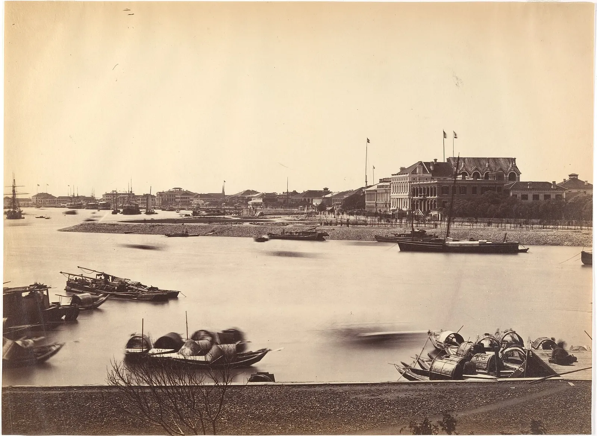

HIST 270 · Chapter 18 · Self-Strengthening Workshop · Teaching Page
Feng Guifen
Scholar, refugee, essayist: the man who asked why China was large and yet weak
馮桂芬 1809–1874

Your job today: you are the class expert on Feng Guifen. Nobody else in the room has read this page.
- Read (about 10 minutes): his story, the project or event he is tied to, and two short excerpts from his essays. Underline the one sentence you would most like to read aloud.
- Prepare (about 5 minutes): fill in boxes 1–5 at the bottom of this page. Short notes are fine.
- Teach (about 4 minutes): tell the class who he was and what happened, read your sentence aloud, explain why it matters, and ask your question.
- Exit ticket: answer question 6, then export your work and upload it to Canvas.
Who He Was
Feng Guifen was never a high official. He is remembered above all for his ideas. He was a scholar from Suzhou, one of the richest and most cultured cities in China, and in 1840 he placed second in the whole empire in the palace examination. He knew the classics better than almost anyone alive. That is exactly why his criticism stung.
In 1860 the Taiping took Suzhou, and Feng fled with thousands of other refugees to Shanghai. There, behind the foreigners' lines, he watched British and French troops defend the city with guns and discipline the Qing armies did not have. It shook him. In 1861 he wrote a set of essays, Protests from the Jiaobin Studio, asking why the empire had failed, and what to do.
The essays were not printed in full in his lifetime. Late in 1861 Feng's letter helped persuade Zeng Guofan to send Li Hongzhang to rescue Shanghai, and Feng became one of Li's advisers. In 1863 Li opened a school for Western languages and science in Shanghai on Feng's suggestion. In 1898, long after Feng's death, the emperor ordered a thousand copies of his essays printed for officials to comment on.
His Project: An Argument for Learning from the West
Feng's essays asked the question that defined the movement: “Why are Western nations small and yet strong? Why are we large and yet weak?” Your textbook summarizes what he proposed (Ebrey, pp. 322–323):
- ShipyardsHire a few “barbarians” to help set up shipyards and arsenals in each major port.
- DegreesReward the Chinese who managed them with examination degrees, if their ships and weapons were as good as the foreigners'.
- BooksSet up translation bureaus to translate Western books on mathematics and the sciences.
- SchoolsHire Westerners to teach groups of boys Western languages. “China has many brilliant people. There must be some who can learn from the barbarians and surpass them.”
- VotesHave lower-ranking officials elect high officials, and count the votes.
Much of this happened, though not all of it, and not always because of Feng: Li's language school in Shanghai (1863), the Jiangnan Arsenal and its translation bureau (1865), the Fuzhou Navy Yard (1866), and in Beijing a department of astronomy and mathematics with Western teachers (1867). The elections did not happen.
Feng's formula, Chinese principles as the foundation (ti) and Western techniques for use (yong), became the core idea of Self-Strengthening. The slogan later associated with it, “Chinese learning as the essence, Western learning for practical use,” was popularized by Zhang Zhidong in 1898.

Sources: Ebrey, pp. 322–323, quoting Feng from de Bary and Lufrano, Sources of Chinese Tradition, pp. 236–237; Hummel, “Fêng Kuei-fên”; the Ch. 18, Lecture 3 background essay, “Large and Yet Weak” (Zhang Zhidong).
The Reading
Both documents come from Feng's 1861 essays, in two different English translations. In Document A he explains why China lost. In Document B he explains what China should learn, and how to learn it without losing itself. Watch for the last sentence: it became the motto of a whole generation.
Document A · from "On the Manufacture of Foreign Weapons," 1861
. . . we are shamefully humiliated by those four nations in the recent treaties—not because our climate, soil, or resources are inferior to theirs, but because our people are really inferior . . . Why are they small and yet strong? Why are we large and yet weak? We must try to discover some means to become their equal, and that also depends upon human effort. . . . What we then have to learn from the barbarians is only the one thing, solid ships and effective guns.
Ssu-yü Teng and John K. Fairbank, eds., China's Response to the West: A Documentary Survey, 1839–1923 (Cambridge, Mass.: Harvard University Press, 1954), p. 53, as quoted in Daniel Palm, conference paper, Association of Chinese and American Scholars, 2012. Short classroom excerpt of a copyrighted translation.
Document B · from "On the Adoption of Western Learning," 1861
. . . Today the world is 90,000 li around. There is no place boats and vehicles do not travel or human power does not reach. . . . According to Westerners' maps, there are at least one hundred countries in the world. Of the books of these hundred countries, only those from Italy from the time of the end of the Ming and from present-day England, numbering in all several tens, have been translated. . . .
Books on mathematics, mechanics, optics, light, chemistry, and others all contain the ultimate principles of understanding things. Most of this information is unavailable to people in China. . . .
I have heard that with their new methods the Westerners have found that the movements of the earth conform closely to those of the heavens. This can be of assistance in fixing the calendar. . . . I have heard that the Westerners' method of clearing sand from harbors is very effective. . . . This can be of assistance to keep the water flowing. Also, for agricultural and sericultural tools, and things required for the various crafts, they mostly use mechanical wheels, which require little energy but accomplish much. These can assist the people to earn their living. Other things beneficial to the national economy and the livelihood of the people should also be used. . . .
There are many intelligent people in China. Surely there are some who, having learned from the barbarians, can surpass them. . . .
The principles of government are derived from learning. In discussing good government, [the famous historian] Sima Qian [Ssu-ma Ch'ien] said, "Take the later kings as models," because they were closer to his own time, and customs, having changed, were more alike, so that their ideas were easy to implement because they were plain and simple. In my humble opinion, at the present time it is also appropriate to say "Learn from the various nations," for they are similar to us and hence their ways are easy to implement. What could be better than to take Chinese ethical principles of human relations and Confucian teachings as the foundation (ti) and supplement them with the techniques (yong) of wealth and power of the various nations?
J. Mason Gentzler, Changing China: Readings in the History of China from the Opium War to the Present (New York: Praeger, 1977), pp. 70–71, as reproduced in Columbia University, Asia for Educators, "Excerpts from 'On the Adoption of Western Learning' by Feng Guifen." © 1977 Praeger; classroom excerpt.
Words to Know
Questions to Think About as You Read
- Whom does Feng blame for China's defeat: Heaven, the land, or the people? Why is that a hopeful answer, not just a harsh one?
- Document A says China needs “only the one thing,” ships and guns. Document B lists much more. Which is the real Feng?
- His last sentence says China can borrow Western tools without changing its foundation. Is that possible? What would a critic like Woren say?
Your Work Today
Prepare to Teach Feng Guifen
Your draft saves in this browser as you type, on this device only. When you finish, click Export to .txt and upload the file to Canvas. If the download does not work, click Copy all and paste into the Canvas text box.
Exit Ticket
Answer this after everyone has taught. There is no single right answer; just give your reason.